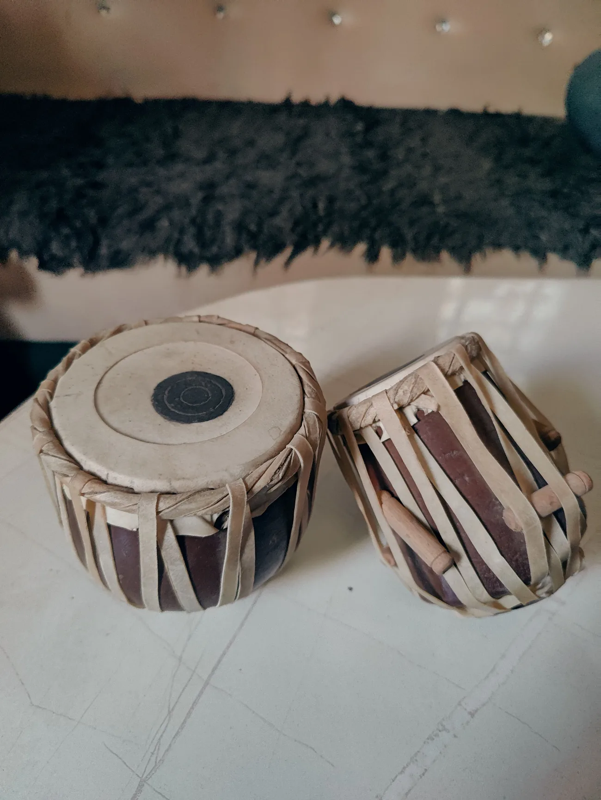
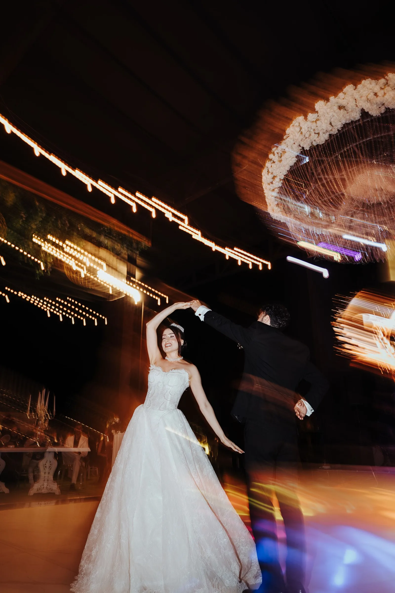
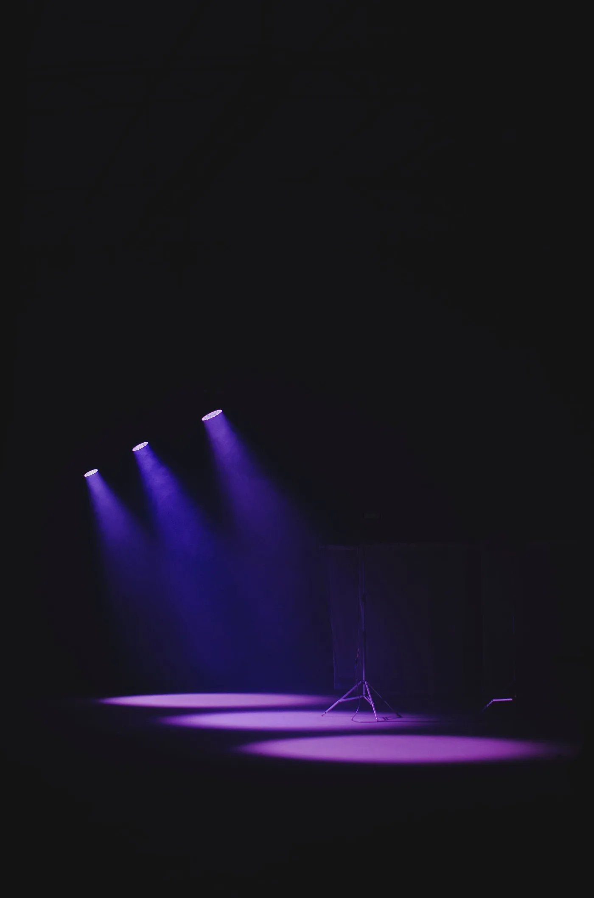

DJ undLive-Trommler
DJ SAID ist ein Event-DJ aus Gütersloh, der orientalische und internationale Feiern in ganz Nordrhein-Westfalen bespielt und dabei live Tabla und Dholak spielt. Gebucht wird für Hochzeiten, Verlobungen, Henna-Abende, Shirni Dadan, Geburtstage und Firmenfeiern, inklusive Beschallung, Licht- und Nebelanlage sowie Moderation auf Wunsch.
Afghanisch, persisch, türkisch. Und alles dazwischen.
Auf den meisten Feiern sitzt nicht nur eine Kultur im Saal. Alle sollen tanzen. Und alles, was dafür nötig ist, kommt aus einer Hand.

- DJ-SetÜber den ganzen Abend, nach Ihren Wünschen zusammengestellt.
- Live-Tabla und DholakGespielt zum laufenden Set, in Echtzeit. Kein Playback.
- Live-PianoAuf Wunsch, für die ruhigen Momente des Abends.
- BeschallungProfessionell, passend zu Ihrer Saalgröße.
- Licht- und NebelanlageWird mitgebracht, aufgebaut und eingerichtet.
- Mikrofon und ModerationWenn Sie jemanden brauchen, der durch den Abend führt.
- Film und FotografieÜber unseren Partner, auf Wunsch mitgebucht.
Aufgebaut wird, bevor Ihre Gäste kommen. Nicht währenddessen.
Hören Sie
selbst
Ein Klick startet. Vorher wird nichts von YouTube oder SoundCloud geladen, auch kein Vorschaubild. Die Vorschauen sind eigene Fotos.


Für welchen Abend
suchen Sie einen DJ?
So läuft das bei uns
Anfrage und Datum
Sie schicken Datum, Ort und Anlass. Wir sagen kurzfristig, ob es geht.
Vorgespräch
Wunschlieder, Ablauf, No-Gos. Sie bestimmen die Musik.
Aufbau vor der Feier
Wir sind fertig, bevor der erste Gast da ist.
Der Abend
Wir lesen den Saal und reagieren. Die Wunschliste ist der Plan, nicht das Gesetz.
Was Gastgeber danach geschrieben haben
„Besonders der Tabla-Einsatz und die Lichtanlage haben einen bleibenden Eindruck hinterlassen. Alles hat reibungslos geklappt, pünktlich, stressfrei.“
J. und E., Feier
„Ich habe von meinen afghanischen sowie türkischen Gästen sehr viel positives Feedback bekommen. Dein Trommeln ist der Hammer.“
Hochzeit
„Vorallem das du bei jedem Lied Tabla eingesetzt hast, top! Man hat gar nicht bemerkt, dass ein Sänger fehlt.“
Feier
„Durch deine tolle Musik und Tabla hast du ordentlich für Stimmung gesorgt, unsere Gäste waren total begeistert.“
Samira R., Henna-Abend
„Am Anfang dachte ich, es wäre nicht einfach, Musik zweier Kulturen unter einen Hut zu bringen, aber du hast mir das Gegenteil gezeigt.“
Verlobung
„Obwohl wir anfangs Bedenken hatten, einen DJ statt einen Sänger zu buchen, bin ich einfach nur erleichtert. Das war die beste Entscheidung, die wir treffen konnten.“
Hochzeitsfeier
„Du hast am Freitag die Tanzfläche am Start gehalten. Hast die Übergänge der Lieder gut hingekriegt. Außerdem fand ich deine Stereoanlage sowie deine Lichteffekte top.“
Gast einer Feier
Was kostet
das
Pauschale statt Stundenzähler. Der Preis hängt an Dauer, Leistungen und Anfahrt. Sie bekommen ein festes Angebot mit allem drin, keine Nachforderungen.
Angebot anfragenWas Gastgeber vorher wissen wollen
Ersetzt ein DJ einen Live-Sänger?
Spielen Sie auch türkische, arabische oder deutsche Musik?
Wie weit fahren Sie?
Wie läuft das Vorgespräch?
Was, wenn wir spontan andere Musik wollen?
Bringen Sie Technik mit?
Wann sind Sie vor Ort?
Wie früh sollte man buchen?
Was passiert bei Ausfall?
Was ist ein Henna-Abend?
Übernehmen Sie die Moderation?
Machen Sie Foto und Video?
Datum
frei?
Schicken Sie uns Anlass, Datum und Ort. Sie bekommen schnell eine klare Antwort, ob der Termin geht, und ein Angebot mit allem drin.